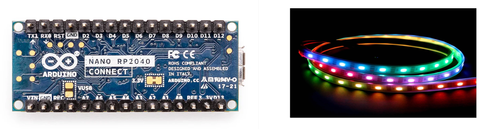

The Arduino Nano RP2040 Connect uses a Raspberry Pi RP2040 processor. This processor is comprised of a central dual-core Arm Cortex-M0+ processor and two side processors known as PIOs.
NeoPixels require precise timing to support their digital communication protocol. Specifically, they operate using an 800 KHz data stream, where a specific pulse width represents each bit. A "0" bit is represented by a short pulse (200-600ns high, 650ns low), while a "1" bit is represented by a longer pulse (550-1000ns high, 450ns low). After transmitting data for all pixels, a longer reset pulse (at least 50 microseconds) is needed to latch in the new color values.
Note that timing deviations of more than ±150 ns can cause errors.
The PIO processors provide a means to maintain the precise timing required by NeoPixel protocol while freeing the central dual-core Arm Cortex-M0+ to perform other tasks.
This library implements NeoPixel control based on the pico examples for the WS2812.